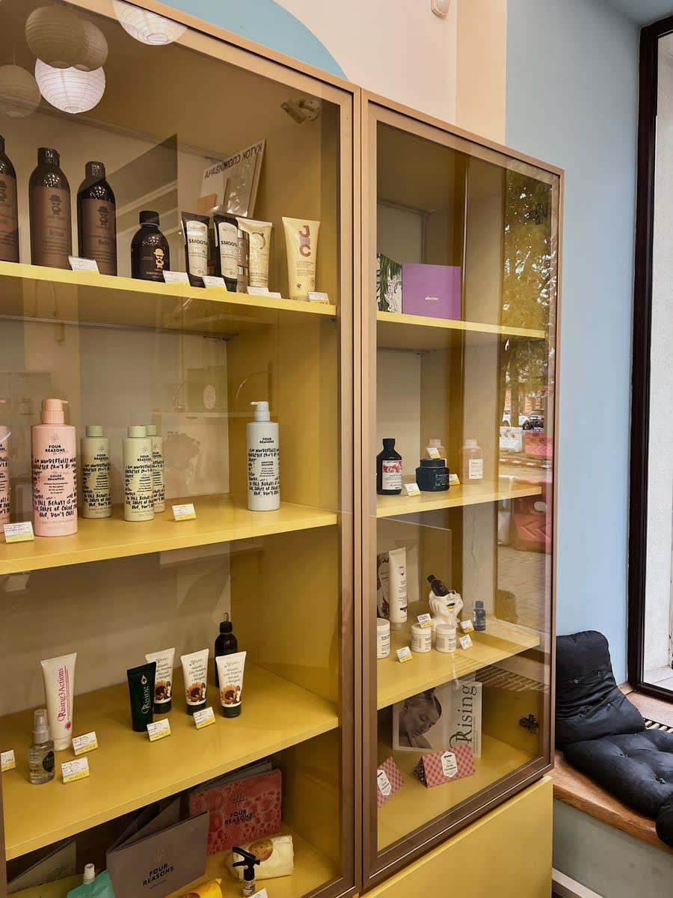
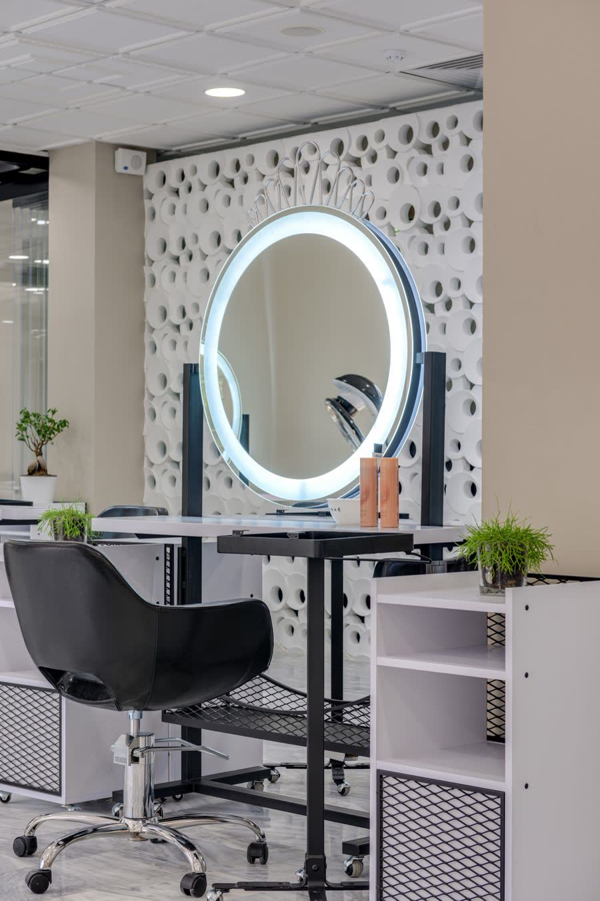
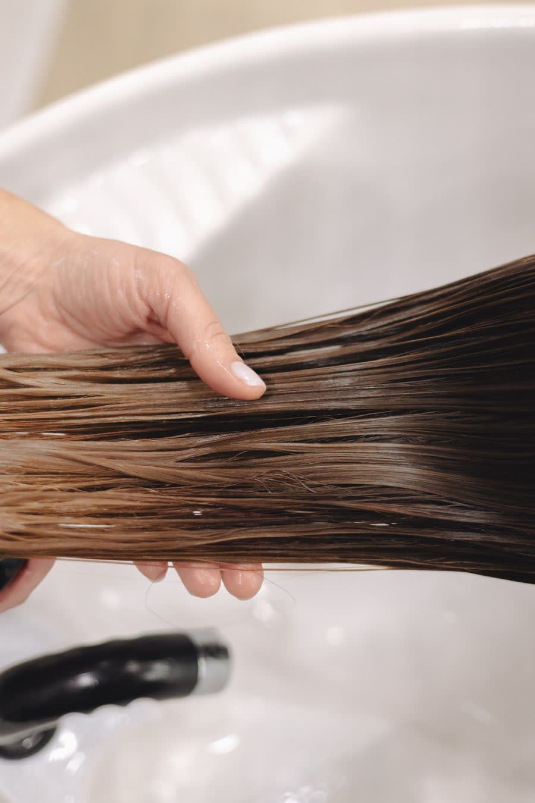
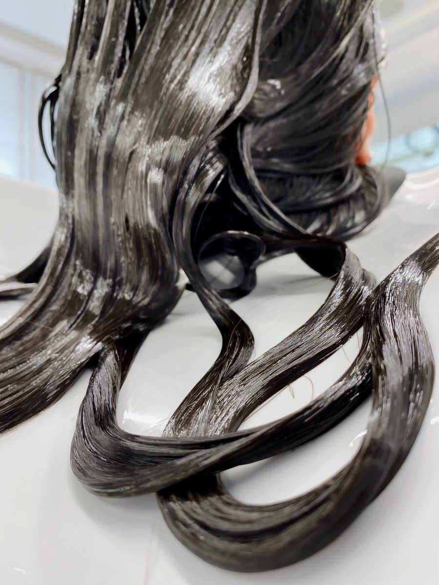
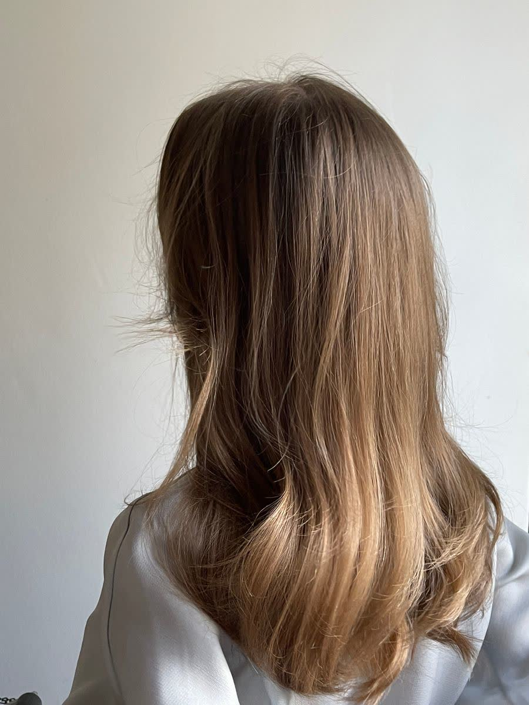
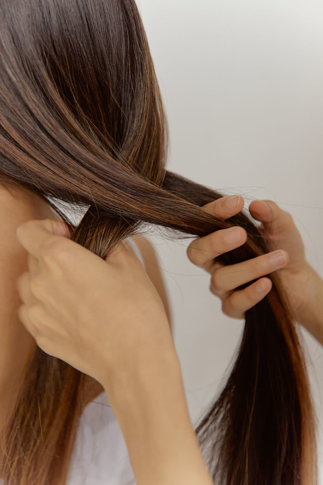
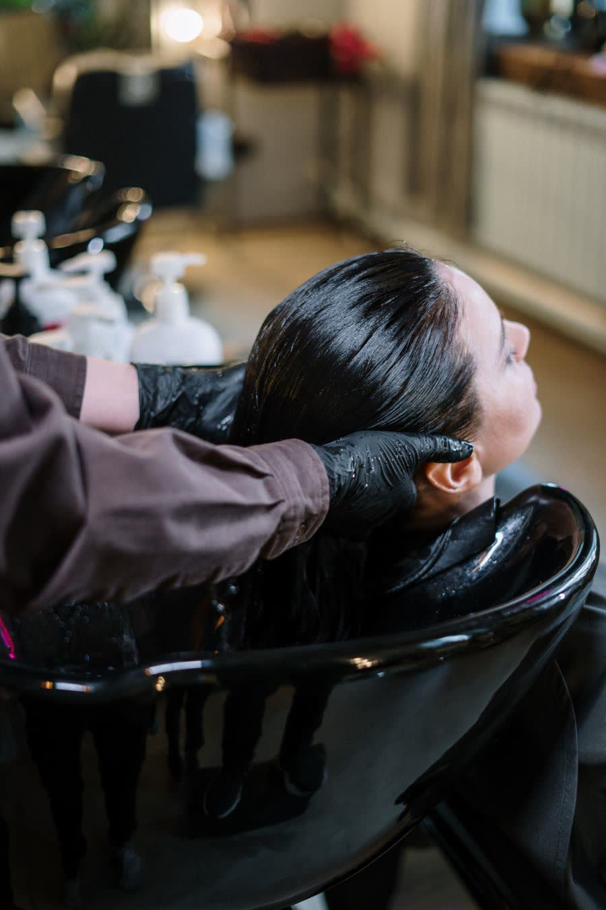

Alisado progresivo
Sin formol. Baja el volumen y el frizz, deja movimiento y se lleva un secado de diez minutos en casa.
- Sin formol
- Rinde 3 a 4 meses
- Se puede repetir
Alisados, reconstrucción capilar y la línea de productos SC para que el resultado no se te vaya con el primer lavado. Turno reservado, uno por vez.
Antes de tocar nada miramos el largo, el estado del medio a puntas y qué te hiciste en los últimos meses. Recién ahí se define el tratamiento.
Sin formol. Baja el volumen y el frizz, deja movimiento y se lleva un secado de diez minutos en casa.
Para quien busca lacio marcado y duradero. Sella la cutícula y le devuelve brillo espejo al pelo.
El servicio estrella cuando el pelo está pasado de decoloración, quebradizo o con puntas abiertas. Reponemos masa desde adentro.
Hidratación profunda para pelo poroso y sin cuerpo. No alisa: devuelve suavidad, peso y brillo.
Corte pensado para acompañar el tratamiento y brushing de terminación, para que salgas del estudio como querés verte.
¿No sabés qué necesita tu pelo? Mandá una foto por WhatsApp y te decimos qué conviene antes de reservar.
Los valores se pasan por WhatsApp: dependen del largo y del estado del pelo, y preferimos no tirar un número que después no se cumpla.
Movés la barra y ves el punto de lacio de cada tratamiento. Elegís, y el mensaje de WhatsApp sale armado con todo lo que necesitamos saber.
Baja el frizz y el volumen sin sacarte el movimiento. El pelo queda liviano y con caída natural.
Te respondemos con el valor exacto según lo que veamos en la foto.

La mayoría de los tratamientos que "no duraron" se cayeron en la ducha de casa. Por eso armamos la línea SC: lo mismo que usamos acá, para que te lo lleves.
No arrastra el tratamiento. Es lo primero que hay que cambiar.
Una vez por semana. Repone lo que la plancha y el sol se llevan.
Sella la cutícula y da el brillo del primer día sin apelmazar.
Innegociable si usás planchita o secador seguido.
SC Estudio está en Paternal. No es un salón de paso: se atiende con turno reservado para que el tratamiento se haga bien y en el tiempo que necesita.





